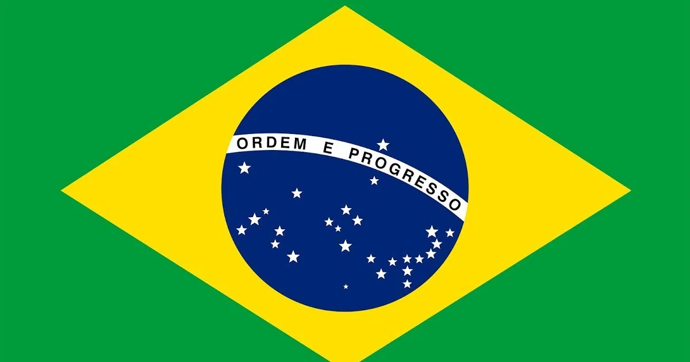

TOP 5 NO BRASIL HOJE
1. P Do Pecado (Ao Vivo) - Grupo Menos É Mais, Simone Mendes (Ouça esta música aqui)
2. Tubarões (Ao Vivo) - Diego & Victor Hugo (Ouça esta música aqui)
3. Eu Vou Na Sua Casa - Felipe Amorim, Malibu, Vitão, Bin (Ouça esta música aqui)
4. Ordinary - Alex Warren (Ouça esta música aqui)
5. Nocaute - Jorge & Mateus (Ouça esta música aqui)
ERAS DA MÚSICA BRASILEIRA
Música Erudita e o Início da Música Brasileira
- Primórdios e chegada da corte portuguesa: A música no Brasil começa a se desenvolver com a chegada da Família Real em 1808, trazendo consigo uma biblioteca musical sofisticada e revitalizando a Capela Real.
- Classicismo e figuras como Padre José Maurício: O Classicismo floresce com a influência europeia e a figura do Padre José Maurício Nunes Garcia, que mesclou elementos clássicos com o contexto local.
A Era de Ouro da Música Popular (c. 1930-1945)
- Ascensão do Rádio e Gravação: O desenvolvimento do rádio, do cinema falado e a gravação eletromagnética do som foram fundamentais para a divulgação e o crescimento cultural do país.
- Samba, Marchinhas e Música Caipira: A interação entre compositores e cantores levou à expansão dos estilos regionais, com o samba e as marchinhas ganhando grande popularidade e a ascensão da música caipira.
Século XX: Modernidade e Diversidade
- Bossa Nova (anos 50): A Bossa Nova surgiu com uma estética mais "leve" e sofisticada, que influenciou a produção musical futura, especialmente a partir de 1950.
- MPB, Tropicalismo e Festivais (anos 60-80): As décadas de 1960 a 1980 foram um período de efervescência cultural e política, com os festivais de música revelando grandes artistas e a MPB se consolidando como um movimento de contestação e identidade.
- Surgimento de gêneros: Nesse período, o samba-rock, a música sertaneja e o forró também ganharam grande projeção.
Gêneros e Evolução
- Diferentes estilos: Além da MPB, a música brasileira se caracteriza por diversos gêneros como o Samba, Forró, Choro, Sertanejo, Funk e outros.
- Influência cultural: Cada região do Brasil desenvolveu estilos únicos, que hoje formam a riqueza da identidade musical do país.
